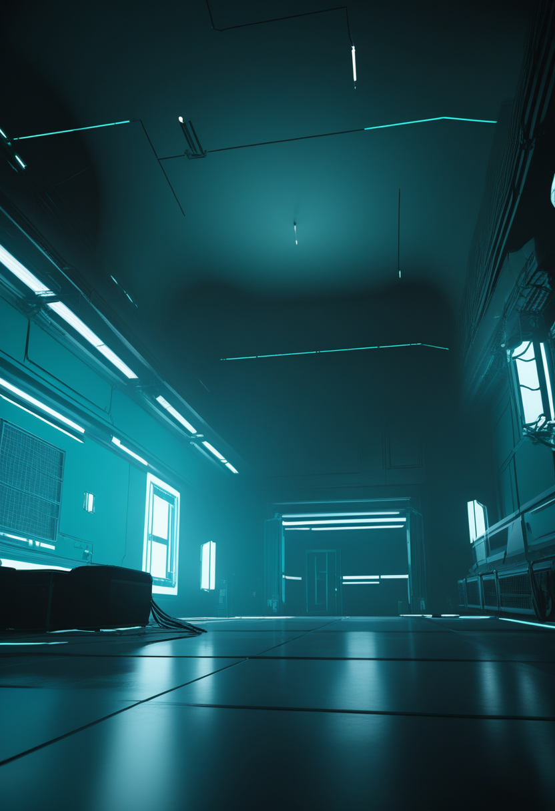
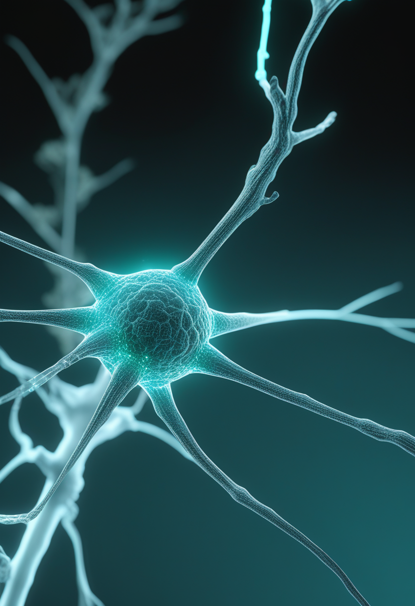
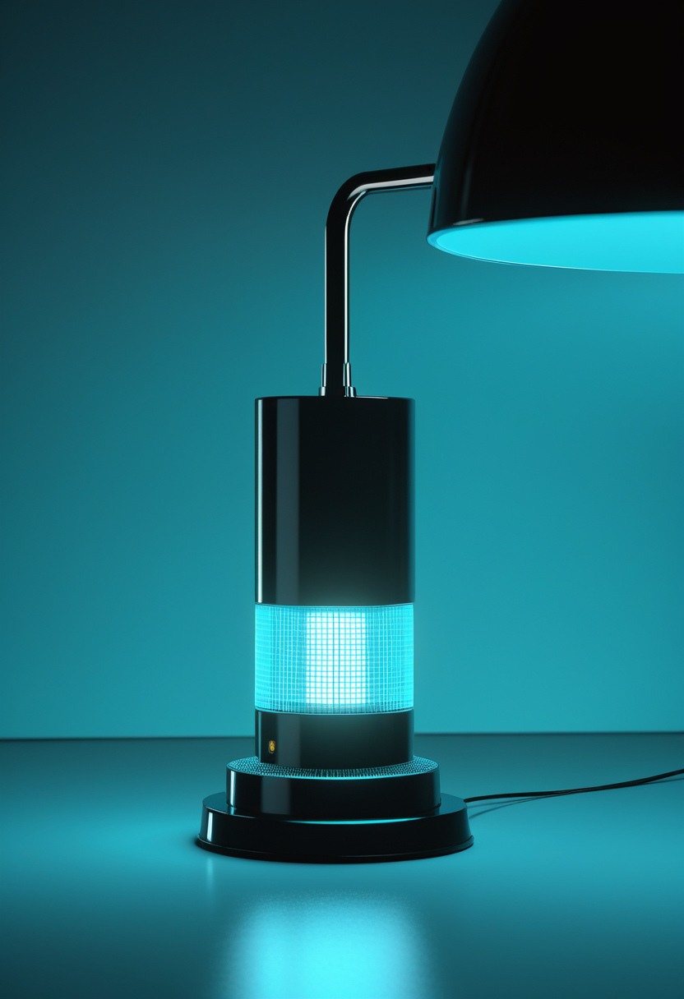
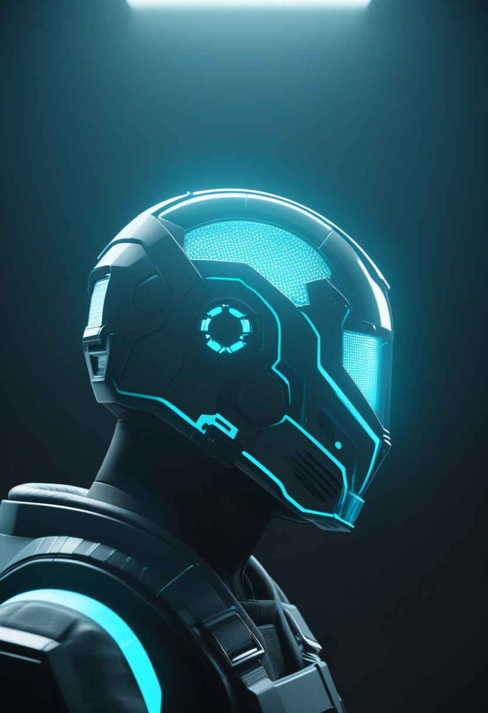
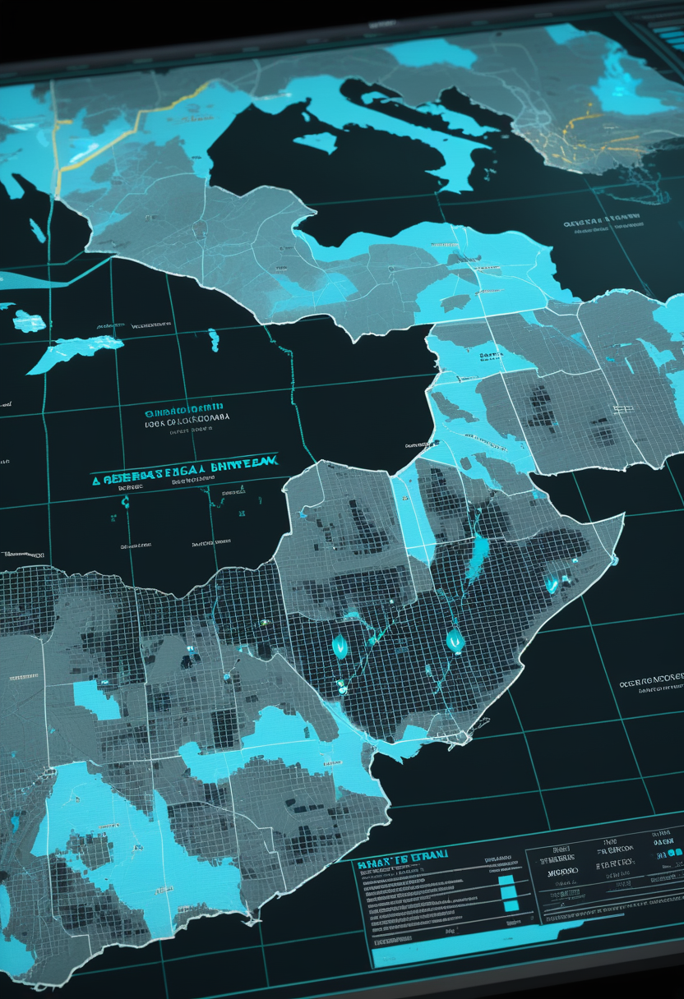
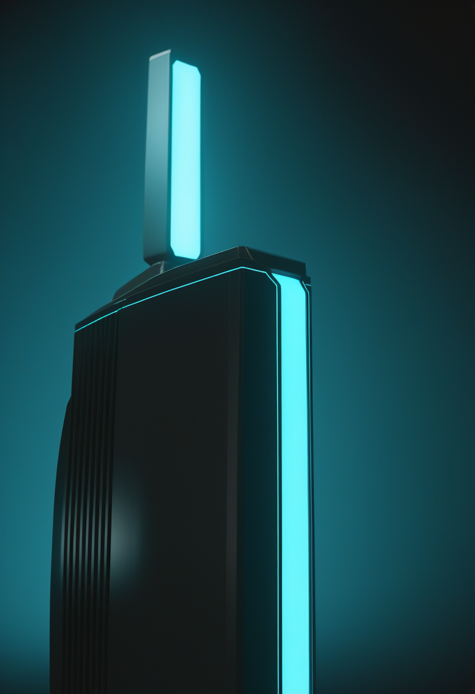
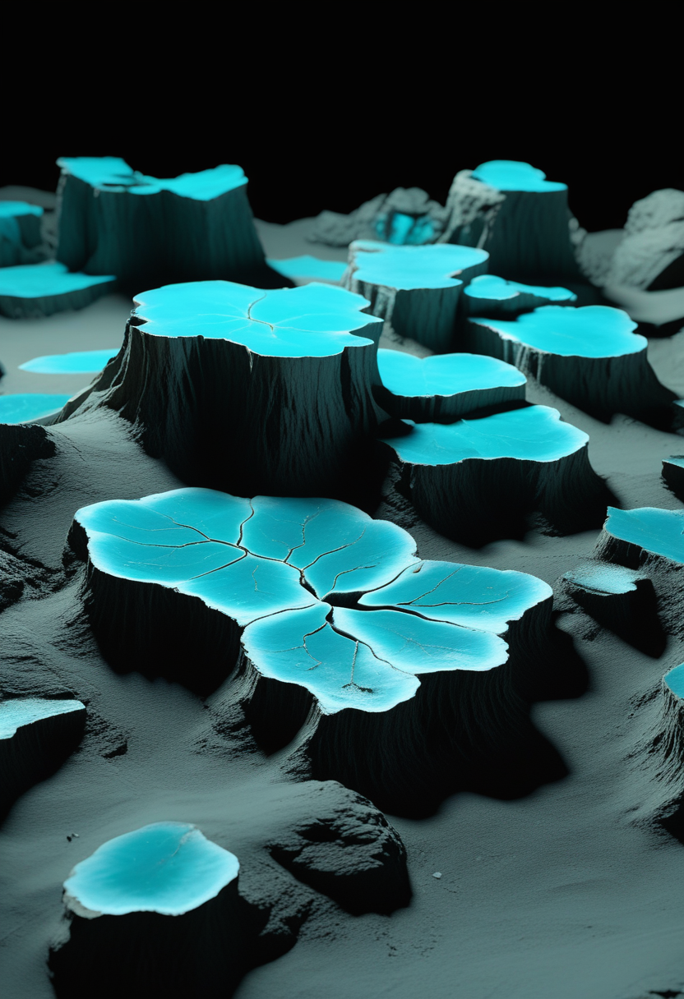

土曜日の便り。ケニア保健省は10月16日、エボラ(ブンディブギョ型)の3例目を確認した。10月5日に死亡した40歳男性(1例目)の親族の65歳女性で、隔離中に陽性となった。前号時点では接触者122人の追跡を完了し二次感染はゼロとされていたが、今回初めて家族内での二次感染が確認された。基盤の章ではDRCエボラの米CDC集計(確定9,235例に更新)と、日本の全国インフルエンザ定点12.81への上昇を届ける。命の章ではウィスコンシン医科大学のチームによる、アストロサイトのSMN補充とフォルスコリン併用でSMAのシナプス病理が改善したという基礎研究を。自由の章では、Precision Neuroscienceが神経刺激装置メーカーNevroの創業者を社長に任命し経営体制を強化したことを。畏敬の章では、JWSTが最も冷たい褐色矮星で『水の雲』の変化をとらえたことと、NEJMのPh陽性ALL試験でポナチニブ併用が優位だったことを。美の章では、英議会のAI再現音声演説の続報(手続き承認・本人原稿)と、福建省で見つかったジュラ紀の『飛べない鳥』の化石を取り上げる。

10/15号の続報 ― ケニア保健省は10月16日、エボラ(ブンディブギョ型)の3例目を確認したと発表した。10月5日に死亡した40歳男性(1例目)の親族である65歳女性で、隔離・経過観察中に陽性となった。2例目の39歳男性も同じ家族で、容体は安定しているという。保健省は『全例が1例目につながり、市中感染の証拠はない』とし、接触者130人中127人を追跡済みと説明する一方、AP通信は1例目の接触者のうち3人が未追跡と報じており、数字の一致は取れていない(要確認)。前号時点では接触者122人の追跡を完了し二次感染はゼロとされていたが、今回初めて家族内での二次感染が確認された。

ウィスコンシン医科大学のアリソン・エバート氏らの研究チーム(Cure SMA助成を受け、アストロサイト(神経を支えるグリア細胞)とSMAの関係を長年調べてきたグループ)は、iPS細胞から作ったSMA患者由来の培養系で新しい実験結果を発表した。アストロサイトだけにSMNタンパクを補っても改善が部分的だったこれまでの知見を踏まえ、低分子フォルスコリンを併用したところ、プロテオミクス・シナプス分画の単離・電気生理を組み合わせた解析で、SMNの働きとは別にアクチン細胞骨格が関わっている可能性が示されたという。Annals of Neurologyに10月12日付でオンライン先行公開された。治療への応用はまだ基礎研究の段階。
今週は商業・規制面の新規一次情報が乏しく、基礎研究1件のみ。アストロサイトという『神経を支える側』からSMAに迫る視点は、十年以上同じ研究室が積み重ねてきた仕事の延長線にある。

Precision Neuroscienceは10月15日、神経刺激装置メーカーNevroの創業者コンスタンティノス・アラタリス氏を社長に任命したと発表した。アラタリス氏は2025年5月から同社取締役を務めており、取締役は引き続き兼任する。Nevroは2010年に欧州CEマーク、2015年にFDA承認を得た実績がある。同時に、Nevroの米国展開を担ったキャサリン・ノイエンフェルト氏が商業戦略担当シニアバイスプレジデントに就任した。Precisionは18施設で100件超の留置実績を持ち、薄膜電極『Layer 7』は最長30日の埋込でFDAの510(k)クリアランスを取得済み。Medtronicとの商業提携とテキサス州の自社MEMS工場も持つ。
視線入力・BCIとも今週は大きな技術発表がなかった。その中でPrecisionが見せたのは、医療機器を『売る』経験を持つ経営陣への切り替え ― BCIが研究段階から販売段階に近づいているサインだ。

3例目は1例目の親族の65歳女性で、隔離・経過観察中に陽性となり、国立ウイルス参照検査室とKEMRIの両方でブンディブギョ型と確認された。2例目の39歳男性も同じ家族。ケニア保健省は市中感染を否定し、接触者130人中127人を追跡済みとしているが、AP通信は『1例目の接触者3人が未追跡』と報じ、数字は一致していない(要確認)。

米CDCの集計(10月15日時点)によると、全体で確定9,235例・死亡4,444人、うちコンゴ民主共和国(DRC)が9,212例・4,441人。疑い例は一時的に集計から外されており、保健省関係者は未報告例が確定数の2〜3倍に達する恐れを指摘している。WHOの緊急事態宣言(PHEIC)は継続中。
厚生労働省の10月16日発表によると、第41週(10月5〜11日)の全国定点当たり報告数は12.81(前週11.35)、報告総数は4万7,746人だった。沖縄が31.34で最多だが2週連続で減少しており、神奈川21.60・埼玉20.99・千葉19.55が続く。学校等の休業施設は1,703で、前週の937から大きく増えた。
ケニアでは『二次感染ゼロ』の記録が崩れ、DRCでは集計がまた一段上がった。エボラの戦線は縮小ではなく形を変えて続いている。国内ではインフルエンザが全国的な早期流行の様相を強めている。
アリゾナ大学のブリタニー・マイルズ氏らのチームは、約7.4光年先にある最も冷たい褐色矮星WISE 0855をJWSTのNIRSpecで11時間にわたり15分ごとに分光観測した。一酸化炭素の変化が最も大きく、ホスフィンの変化と連動していたという。研究チームは斑状の『水の雲』が厚くなったり薄くなったりしていると解釈するが、雲を直接撮影したわけではなく、大気モデルとの比較による結論である点に注意が必要。太陽系外で『天気』を追う新しい観測手法として注目されている。

成人のフィラデルフィア染色体陽性急性リンパ性白血病(Ph+ALL)患者236人を対象にした無作為化試験で、ポナチニブとブリナツモマブを併用した群の24か月無イベント生存率は86%、イマチニブと化学療法を併用した従来群は67%だった(NEJM10月15日号)。化学療法の負担を減らせる可能性を示す結果。
JWSTは太陽系外で『天気』そのものを追い始め、白血病治療では化学療法を減らす道筋が無作為化試験で示された。いずれも、これまで見えなかった変化を捉える観測・計測の精度が一段上がった結果だ。
前号既報の英上院演説について、上院の手続委員会が技術の使用を事前に承認していたことが分かった。原稿はキャンベル氏本人が書いたもので、声だけを過去のインタビュー録音から再現した。ElevenLabsは、同社技術によって1万1,000人超の失われた声を復元したと説明している(企業側の発表数字で独立検証はない)。声という個人的な特徴の再現技術が、審査の手続きを経て公的な場に正式に受け入れられた一例になる。

中国科学院のチームは、福建省政和県の約1億5,000万年前の地層から、カラスほどの大きさの鳥類Yuezhuornis yangyuanensisの化石を発見した。手足の比率が地上性の鳥に似ており、飛べなくなった最古の鳥とされる。始祖鳥のすぐ上に位置づけられ、初期の鳥の進化が必ずしも飛行に向かっていなかったことを示す。Nature掲載と報じられているが、誌名は二次情報であり要確認。
声を再現する技術は手続きを経て公的な場に正式に受け入れられ、1億5,000万年前の鳥の化石は『飛行こそが鳥の宿命ではなかった』ことを示す。人間を記録する技術と、生き物の来歴をたどる技術が、同じ週に別々の時間軸で進んでいた。
土曜日の便り。ケニアでエボラの3例目が確認され、前号で『二次感染ゼロ』とされていた状況から一転、家族内での二次感染が初めて明らかになった。基盤の章では、DRCエボラが米CDC集計で確定9,235例に更新されたこと、日本の全国インフルエンザ定点が12.81に上昇したことを届けた。命の章では、ウィスコンシン医科大学のチームによる、アストロサイトのSMN補充とフォルスコリン併用でSMAのシナプス病理が改善したという基礎研究を伝えた。自由の章では、Precision NeuroscienceがNevro創業者を社長に任命し、経営体制を商用化へ向けて強化したことを届けた。畏敬の章では、JWSTが最も冷たい褐色矮星で『水の雲』の変化をとらえたことと、NEJMのPh陽性ALL試験でポナチニブ併用が優位だったことを伝えた。美の章では、英議会のAI再現音声演説の続報と、福建省で見つかったジュラ紀の『飛べない鳥』の化石を取り上げた。
では、また明日の朝に。 — JaH